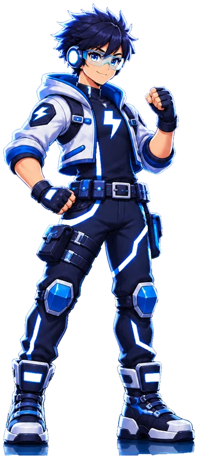
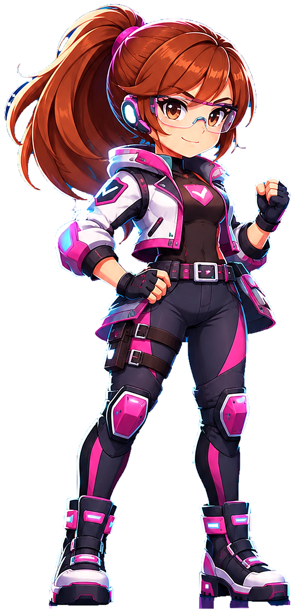
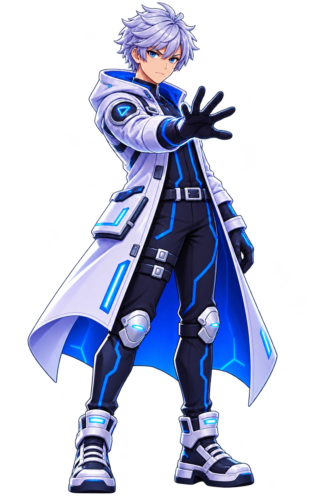
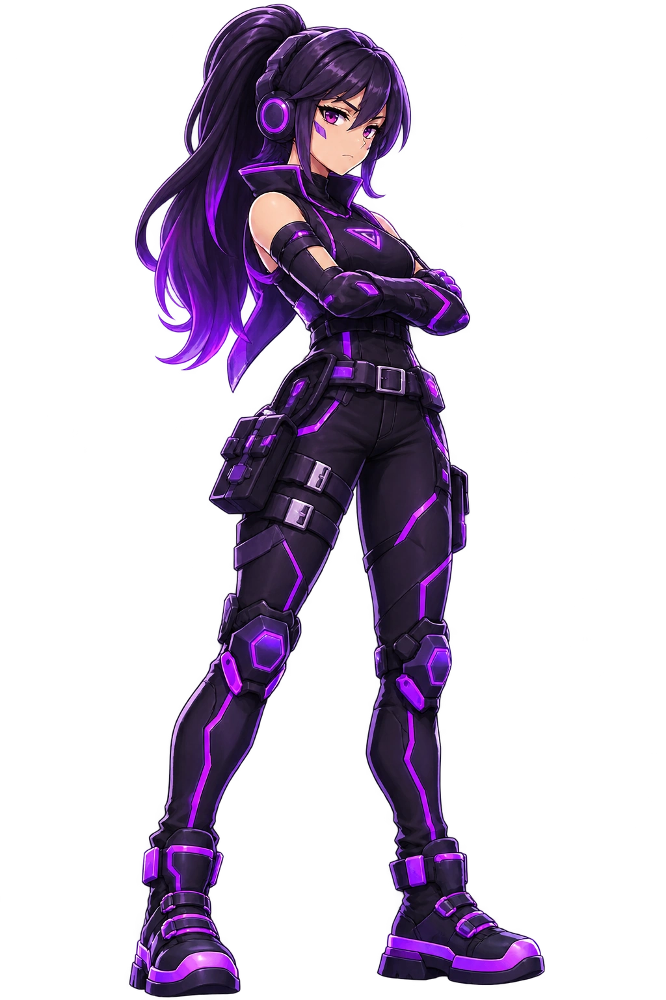
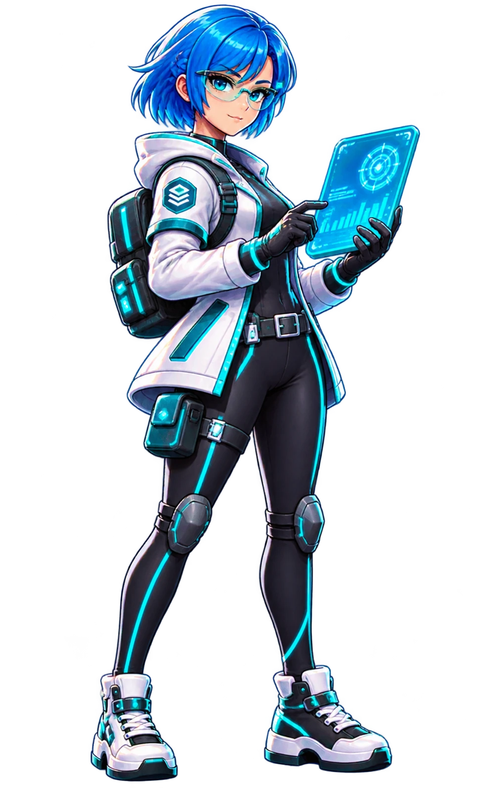

TECH GUARDIANS GAME
Conoce a los personajes
Seis guardianes, seis formas de superar los desafíos. Descubre sus motivaciones y habilidades antes de elegir a tu protagonista.

Kira
Velocidad y determinación
Kira descubrió que reaccionar rápido no basta: cada decisión debe ayudar al equipo. Desde entonces protege los sistemas en peligro y abre caminos cuando el tiempo se agota.
⚡ +15 % de velocidad
🎮 Jugar con los Guardianes
Noah
Exploración y perseverancia
Noah aprendió a observar cada obstáculo desde otra perspectiva. Su curiosidad lo llevó a dominar saltos extraordinarios y a buscar rutas que otros no pueden alcanzar.
⚡ Doble salto
🎮 Jugar con los Guardianes
Maya
Energía y precisión
Maya investiga cómo transformar la energía en soluciones. Antes de actuar analiza el desafío y concentra su poder para superar defensas complejas.
⚡ Carga especial de 1,5 s
🎮 Jugar con los Guardianes
Leo
Estrategia y alcance
Leo cree que una buena estrategia permite resolver problemas antes de que crezcan. Su talento consiste en anticipar riesgos y actuar desde la distancia adecuada.
⚡ +10 % de alcance
🎮 Jugar con los Guardianes
Hana
Ingenio y control
Hana experimenta con tecnologías que alteran el movimiento y la gravedad. Su creatividad convierte pequeños descubrimientos en grandes oportunidades para el equipo.
⚡ +10 % de tamaño del disparo cargado
🎮 Jugar con los Guardianes
Sofía
Innovación y equilibrio
Sofía combina paciencia y creatividad para encontrar soluciones inesperadas. Cuando un camino parece imposible, utiliza su habilidad para elevarse y observar nuevas posibilidades.
⚡ Levitación 3 s · recarga 12 s
🎮 Jugar con los Guardianes